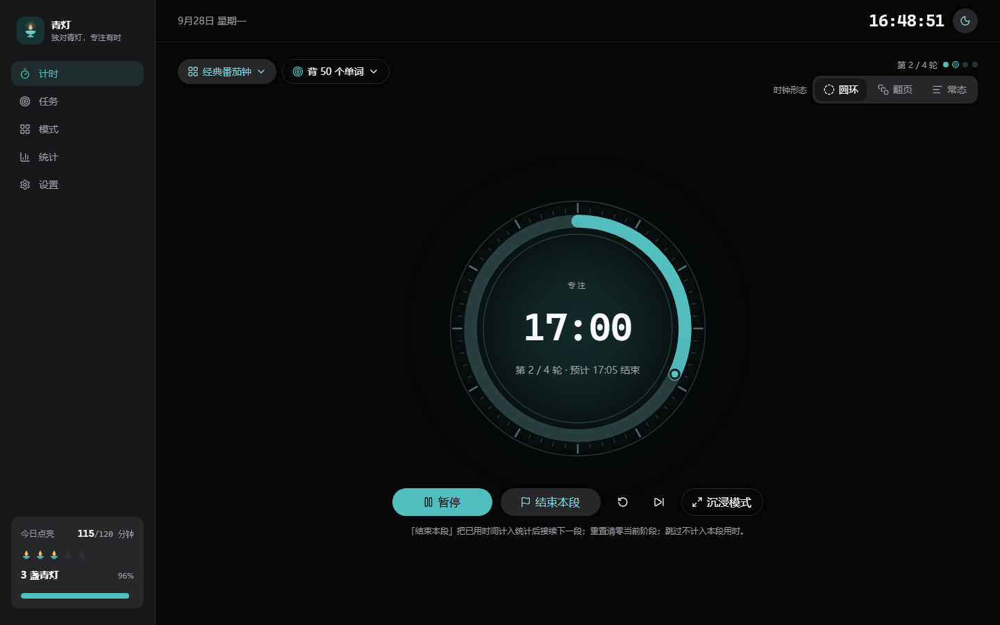
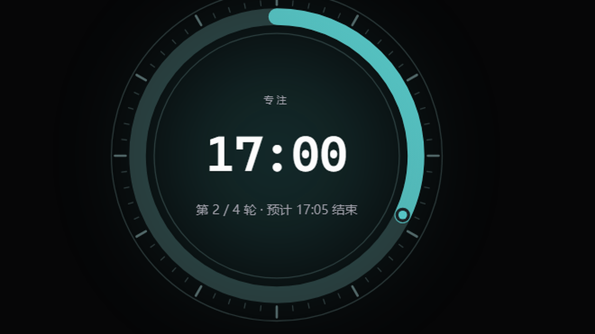
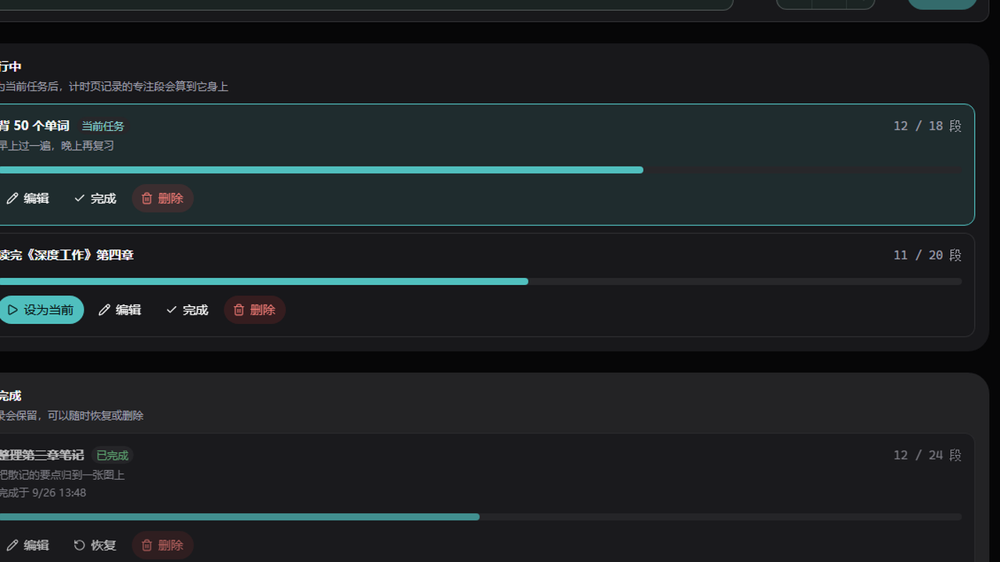
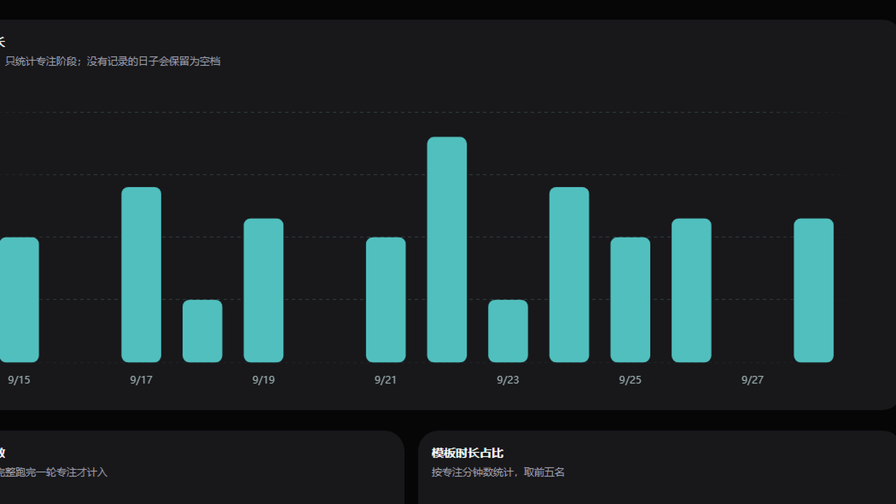
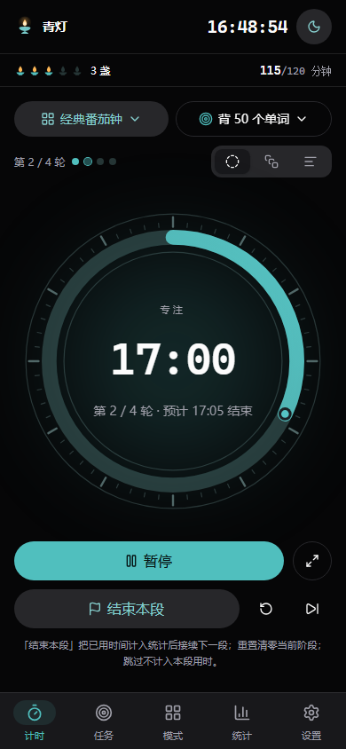

下载
两个平台的记录格式一致，桌面版导出的完整备份可以拿到手机上留档。
正在读取最新版本…
安装包已签名，覆盖安装不会丢掉已有记录。桌面版装好后会自己提示新版本，安卓版下载新的 APK 覆盖安装即可。
界面




手机与平板
手机上换成底部导航，平板上收成左侧一条图标竖栏，都不会挡住计时那一眼。 计时数字随屏幕宽度缩放，横屏竖屏都不会顶出圆环。
手机上单手就够得着：开始、结束本段、暂停都在拇指那一侧；统计里的记录换成卡片， 不用在窄屏上读一张六列的表格。

它做什么
- 三种时钟
- 圆环、翻页、常态倒计时，随时可换。
- 自动接续
- 专注与休息首尾相接，不用每轮重新点开始。想自己掌握节奏时，也可以在设置里关掉。
- 结束本段
- 不必等整轮跑完。随时按「结束本段」，已经用掉的时间会照实计入统计，然后接续下一段。
- 灯位与统计
- 今天点亮了几盏青灯、每天专注多少分钟、完成多少段，都只统计专注阶段。
- 只存本机
- 记录写在这台设备的 SQLite 文件里，不注册、不上传、不联网。可以一键导出备份或表格。